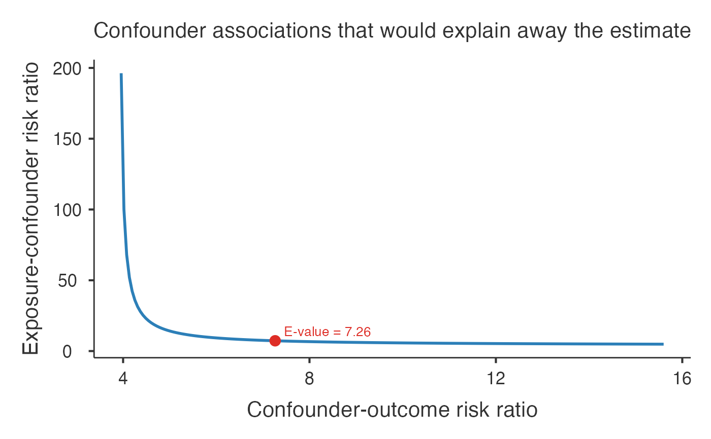

Computes the E-value, the minimum strength of association that an unmeasured confounder would need to have with both the exposure and the outcome - above and beyond the measured covariates - to fully explain away an observed exposure-outcome association (VanderWeele & Ding, 2017). An E-value is reported for the point estimate and for the confidence-interval limit closest to the null. Larger E-values indicate results more robust to unmeasured confounding. Accepts risk ratios, odds ratios, hazard ratios, or standardized mean differences.
Usage
evalue(
data,
effectType = "RR",
estimate = 2,
ci_lower = 0,
ci_upper = 0,
rare = FALSE,
trueValue = 1,
showPlot = TRUE,
showSummary = FALSE,
showExplanation = FALSE
)Arguments
- data
Optional data frame. The E-value is computed from the estimate and confidence limits entered below; a data frame is not required.
- effectType
The type of effect estimate. Odds and hazard ratios are converted to an approximate risk-ratio scale before the E-value is computed.
- estimate
The observed effect estimate (ratio measures on their natural scale, > 0; a standardized mean difference on the d scale).
- ci_lower
Lower confidence limit of the estimate. Set both limits to 0 to compute the E-value for the point estimate only.
- ci_upper
Upper confidence limit of the estimate.
- rare
Whether the outcome is rare (affects the odds-ratio / hazard-ratio to risk-ratio conversion). When rare, OR and HR approximate the RR directly.
- trueValue
The value of the effect measure representing no effect (1 for ratio measures). The E-value is computed for the association relative to this value.
- showPlot
Display the bounding curve of confounder associations that would explain away the estimate, with the E-value marked.
- showSummary
Display a plain-language interpretation of the E-value.
- showExplanation
Display an explanation of the E-value methodology.
Value
A results object containing:
results$todo | a html | ||||
results$mainTable | a table | ||||
results$plot | an image | ||||
results$summary | a html | ||||
results$explanation | a html |
Tables can be converted to data frames with asDF or as.data.frame. For example:
results$mainTable$asDF
as.data.frame(results$mainTable)
Examples
# \donttest{
evalue(
effectType = "RR",
estimate = 3.9,
ci_lower = 1.8,
ci_upper = 8.7,
rare = FALSE)
#>
#> E-VALUE FOR UNMEASURED CONFOUNDING
#>
#> E-value for Unmeasured Confounding
#>
#> The E-value is the minimum strength of association (on the risk-
#> ratio scale) that an unmeasured confounder would need to have with
#> both the exposure and the outcome - beyond the measured covariates -
#> to fully explain away an observed association (VanderWeele & Ding,
#> 2017). Larger E-values indicate results more robust to unmeasured
#> confounding.
#>
#> Enter: the effect measure, the point estimate, and (optionally)
#> its confidence limits. Odds and hazard ratios are converted to an
#> approximate risk-ratio scale first. An E-value is reported for the
#> point
#> estimate and for the confidence limit closest to the null.
#>
#> E-values
#> ────────────────────────────────────────────────────
#> RR scale E-value
#> ────────────────────────────────────────────────────
#> Point estimate 3.900000 7.263034
#> CI limit closest to null 1.800000 3.000000
#> ────────────────────────────────────────────────────
#> Note. E-value: minimum confounder association
#> (risk-ratio scale) with both exposure and
#> outcome needed to explain away the estimate.
#>

# }